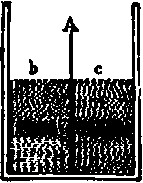

The Blood Gases
Description
This section is from the book "The Human Body: An Elementary Text-Book Of Anatomy, Physiology, And Hygiene", by H. Newell Martin. Also available from Amazon: The Human Body.
The Blood Gases
Ordinary fresh or salt water has a good deal of air dissolved in it, which fishes breathe. Blood also contains a quantity of gases which it gives off when exposed to a vacuum, about sixty pints of gas to a hundred pints of blood. In blood going to the lungs the main gas is carbon dioxide (or carbonic acid), which is a waste product of all the organs of the body. In blood coming from the lungs there is more oxygen.
What may we learn by examining blood-serum? What is blood-serum?
What happens when we try to boil blood-serum? Why does it coagulate in heating? What proportion of albumen exists in blood?
What things are found in the blood serum in addition to water? How much water is there in ten pints of blood-plasma?
How much solids do the red corpuscles contain? What proportion of these is Hæmoglobin ? Name other things found in the red corpuscles.
What do fishes breathe ? What does blood give off when placed in a vacuum? How many pints of gas for each ten pints of blood?
Summary
" Blood, then, is a very wonderful fluid: wonderful for being made up of colored corpuscles and colorless fluid, wonderful for its fibrin and power of clotting, wonderful for the many substances, for the proteids, for the ashes or minerals, for the rest of the things which are locked up in the corpuscles and in the serum.
" But you will not wonder at it when you come to see that the blood is the great circulating market of the body, in which all the things that are wanted by all parts, by the muscles, by the brain, by the skin, by the lungs, liver, and kidneys, are bought and sold. What the muscle wants it buys from the blood; what it has done with it sells back to the blood; and so with every other organ and part. As long as life lasts this buying and selling is forever going on, and this is why the blood is forever on the move, sweeping restlessly from place to place, bringing to each part the things it wants, and carrying away those with which it has done. When the blood ceases to move, the market is blocked, the buying and selling cease, and all the organs die, starved for the lack of the things which they want, choked by the abundance of things for which they have no longer any need."—Foster.
Hygienic Remarks
The blood flowing from any organ will have lost or gained, or gained some things and lost others, when compared with the blood which entered it. But the losses and gains in particular parts of the body are in such small proportion as, with the exception of the blood gases, to elude analysis for the most part; and, the blood from all parts being mixed up in the heart, they balance one another and produce a tolerably constant average. In health, however, the red corpuscles are present in greater proportion to the plasma after a meal than before it. Healthy sleep in proper amount also increases the proportion of red corpuscles, and want of it diminishes their number, as may be recognized in the pallid aspect of a person who has lost several night's rest. Fresh air and plenty of it favors their increase. The proportion of these corpuscles has a great importance, since they serve to carry oxygen, which is necessary for the performance of its functions, all over the body. Anaemia is a diseased condition characterized by pallor due to deficiency of red blood-corpuscles, and accompanied by languor and listlessness. It is not unfrequent in young girls on the verge of womanhood, and in persons overworked and confined within doors. In such cases the best remedies are open-air exercise and good food, though medicines containing iron are often of great use.
What is the most abundant gas in blood going to the lungs? What in that leaving those organs?
Why may blood be justly called a wonderful fluid? Why is its complexity not astonishing? Why is the blood always kept in movement during life? What happens when the blood ceases to move?
The Quantity Of Blood In The Body
The total weight of the blood is about one-thirteenth of that of the whole body; a man of average size contains about twelve pounds of blood.
What would we find on comparing the blood leaving an organ with that which entered it? What losses and gains are most easily detected? How is it that the blood maintains a tolerably uniform average composition ? How does a meal affect the proportion of red corpuscles ? How does sleep ? Illustrate. What is the influence of plenty of fresh air ? Why is the proportion of blood-corpuscles important ? What is anaemia ? What class of persons is apt to suffer from it ? What are the best remedies for it ?
What is the proportion of the weight of blood to that of the whole body ?
Fig. 56. A diagram of a dialy-sing apparatus, containing two liquids, b and c, separated by a moist animal membrane.
Continue to: